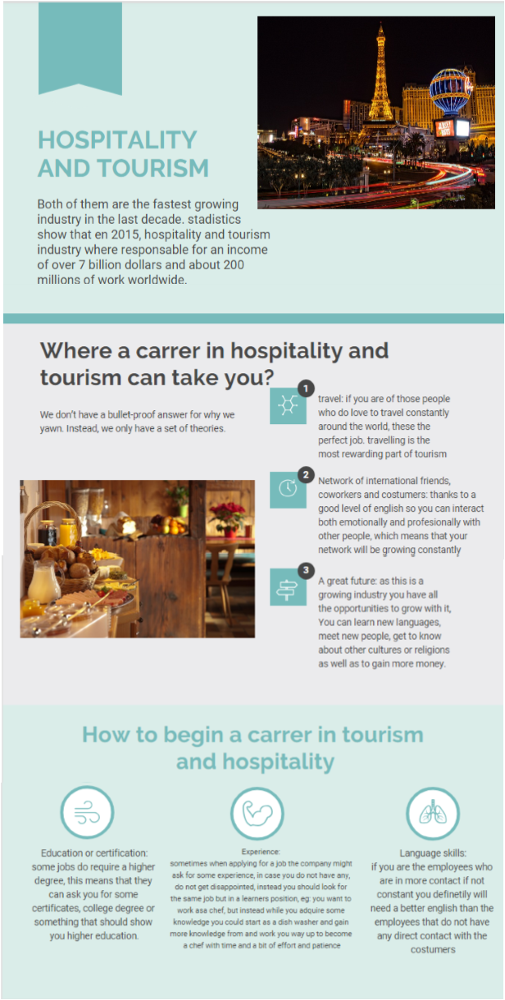

7.Complementary Services and facilities


You know that your guests are the lifeblood of your business. You’re not thinking about how to cut corners or reduce costs. You’re so committed to excellence that you want to offer a higher level of service to your customers. Or, you might be excited about the fact that extra services can also help you generate more revenue, and that might be your true aim. Complementary services or products are those given to an audience / a customer without charge. This term is often used in the tourism and hospitality industry. Examples: Complimentary bottle of water in your room, free Wifi, complimentary room service, an upgrade to a higher room category without additional costs. Complementary facilities are places created to serve a particular function, to entertain the guest, that way their stay will more comfortable and happier, eg: tennis courts, spas, gym installations, etc. Guided visits and excursions in addition to a hotel stay can also be an added value that a hotel decides to offer its guests for free.
Questions
- 1. Which are amenities from the list below?
- 2. What are the best amenities for honeymooners?
- 3. Why do the millennial travelers need their pets with them while traveling?
- 4. What does a hotel gain from implementing complementary services and facilities?
Vocabulary
- 1.Amenity.-any feature that provides comfort, convenience or pleasure.
- 2.Complementary.- is a thing, quality or circumstance that is added to another and completes or improves it
- 3.Laundry.- a room in a house, hotel, or institution where clothes and linens can be washed and ironed.
- 4.Skydiving.- the sport or activity of jumping from an aircraft and performing acrobatic maneuvers in the air during free fall before landing by parachute.
- Lindsay Reyes Fernandez
Next